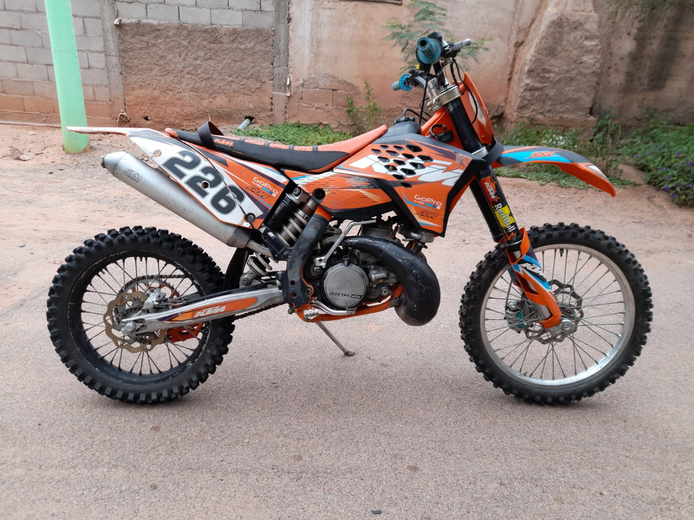

La KTM 300 EXC Six Days 2008 es una moto de enduro de dos tiempos reconocida por su ligereza y respuesta inmediata, adecuada para pilotos que buscan rendimiento en terrenos técnicos. Equipada con un motor monocilíndrico de 293.2 cc y un carburador Keihin PWK de 36 mm, ofrece una potencia impresionante y una aceleración rápida. Su chasis de doble cuna en acero y suspensiones WP proporcionan una excelente estabilidad y absorción de impactos. Con un peso en seco de 103 kg y una altura del asiento de 945 mm, es ideal para competiciones de enduro de varios días.
Descripcion general
Especificaciones tecnicas
| Caracteristica | Detalle |
|---|---|
| Marca: | KTM |
| Motor: | Monocilíndrico, 2 tiempos |
| Cilindrada: | 293.2 cc |
| Alimentación: | Carburador Keihin PWK de 36 mm |
| Refrigeración: | Líquida |
| Transmisión: | 5 velocidades |
| Embrague: | Multidisco en baño de aceite, accionado hidráulicamente |
| Suspensión delantera: | Horquilla invertida WP de 48 mm, recorrido de 300 mm |
| Suspensión trasera: | Monoamortiguador WP PDS, recorrido de 335 mm |
| Frenos: | Disco delantero de 260 mm y trasero de 220 mm |
| Neumáticos: | Delantero 90/90-21, trasero 140/80-18 |
| Altura del asiento: | 945 mm |
| Altura al suelo: | 386 mm |
| Peso en seco: | 103 kg |
| Capacidad de combustible: | 8.5 litros |
Imagenes
